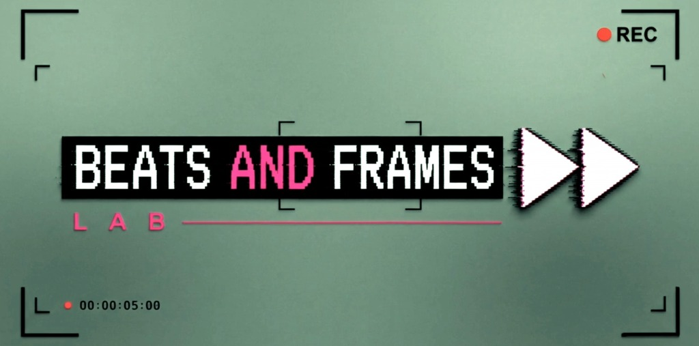

01 • Direção Criativa
Direção de Cena & Conteúdo
Filmes publicitários, branded content, documentários, séries de TV e campanhas digitais com estética autoral e ritmo preciso.
Produtora de conteúdo, direção criativa, música e engenharia sonora por Kiko Costato. De séries de TV na Discovery e filmes publicitários a áudio-séries originais e formatos verticais.

“A tecnologia muda. A linguagem permanece. A história é tudo.”
Clique em qualquer filme para reproduzir — comerciais, branded content, séries de TV e animação.
Narrativa nativa para tela vertical — assista direto nas molduras mobile.
Soluções completas de ponta a ponta para marcas, agências, artistas, canais e plataformas.
Filmes publicitários, branded content, documentários, séries de TV e campanhas digitais com estética autoral e ritmo preciso.
Da pesquisa histórica e escaleta ao roteiro, locução, design sonoro, exemplos musicais e masterização final.
Trilhas originais, identidade sonora (sonic branding), restauração, mixagem imersiva e produção musical em estúdio.
Estruturação de formatos seriados, bíblias de projeto, curadoria musical/histórica e adaptação bilíngue (PT-BR e Inglês).
Navegue pelas 6 séries completas, confira as tracklists e capas históricas de cada episódio.
Para manter www.beatsandframes.com.br 100% blindado contra notificações DMCA ou cobranças indevidas de direitos fonográficos:
Mande uma mensagem direto para a produtora — atendimento com Kiko Costato para conteúdo customizado, direção, trilhas e áudio-séries.